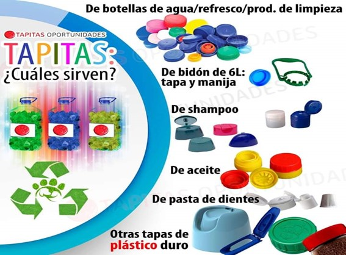

UNA TAPA, UNA VIDA
El plástico ha sido una compañía inevitable para la humanidad, su mal uso es una de las principales fuentes de contaminación y usarlo de manera apropiada es importante para conservar el medio ambiente. Una de las ventajas que tienen las tapas es que ocupan menos espacio y así es más fácil. Por las donaciones de tapas podemos ayudar a muchas personas, por eso la IE fe y alegría granizal con la iniciativa busca transmitir hábitos sobre el cuidado del medio ambiente, además también conservamos el planeta a través del reciclaje; y lo mejor, salva vidas.
En la IE fe y alegría granizal se reciclan las tapas por medio de canecas y recipientes que están ubicados en diferentes lugares de la institución.
Consejo:
Entregarlas limpias: Cuando la tapitas están completamente limpias, se optimiza el proceso de reciclado, logrando así, procesar una mayor cantidad de plástico en un menor tiempo y separarlas por colores.
¿Qué tipos de tapas se reciclan?
